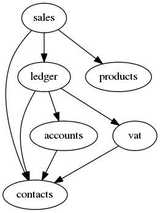

20121206¶
Working on lino.apps.cosi.
- labelWidth 80 -> 90 im Login-Fenster weil “Nom d’utilisateur” sonst nicht passte.
- insert_layout ledger.AccountInvoices
- user can now confirm an Insert window by pressing ENTER key
- ledger and sales now
add_detail_tabto contacts.Partners, Persons and Companies - ledger now uses accounts.MODULE_LABEL which changed from “Accounts” to “Accounting”
- new user group “accounting” defined in accounts
lino.utils.auth.UserProfiles.reset()now supports the situation where a string of user groups is specified but doesn’t name all groups. This leads to a set of default_memberships. For example,lino.apps.cosiuses module ‘accounts’ which now defines usergroup ‘accounting’, but we didn’t yet overridelino.apps.cosi.Lino.setup_choicelists()to reflect this change.- ledger invoices (“simple invoices”) now have a column vat_class
Here a dependancy graph for the lino.modlib modules I’m working on.

It looks sophisticated, but nobody ever claimed that lino.modlib is a simple thing.
Note especially that accounts is being used in Lino/Welfare
which does not currently use ledger.
TODO:
- ledger.Voucher should not define it’s own detail_layout, but Movement.voucher (the pointer to Voucher) should be clickable and link to the detail of the one and only VoucherType MTI child of that Voucher.